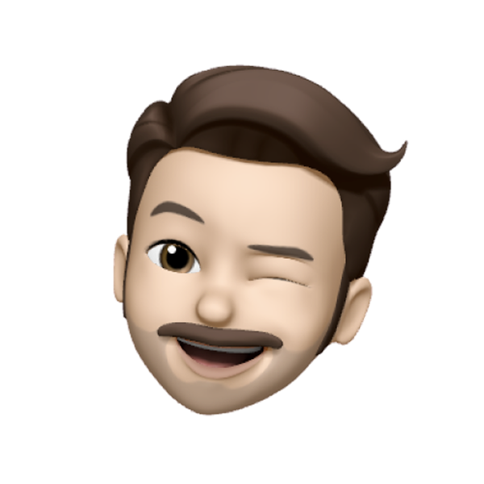
Продакт
Обсуждали цели и гипотезы
Спроектировала подключение и управление «Доброй подпиской» и обновила связанные благотворительные сценарии: выбор фонда, просмотр отчётов, оплату и саксесс после пожертвования.
4 956
Подписок
4 341
Уникальных пользователей
1,24 млн ₽
Автоплатежей
Данные за квартал
Чтобы поддерживать фонд постоянно, человеку приходилось повторять действие, а у фонда не было регулярных поступлений от этого сценария.
Мы добавили возможность помогать ежемесячно. Одновременно я работала над шагами, которые окружают пожертвование: знакомством с фондом, доступом к его отчётам, выбором способа оплаты и подтверждением помощи
Моей задачей было сделать условия регулярной помощи понятными до подключения подписки и дать человеку возможность управлять своим решением после него.
С командой оплаты согласовала представление способов оплаты в приложении и на вебе. Обновление баннера «Знака добра» согласовывала с charity-командой и командой экрана успешной подачи объявления.

Обсуждали цели и гипотезы

Согласовывали концепты
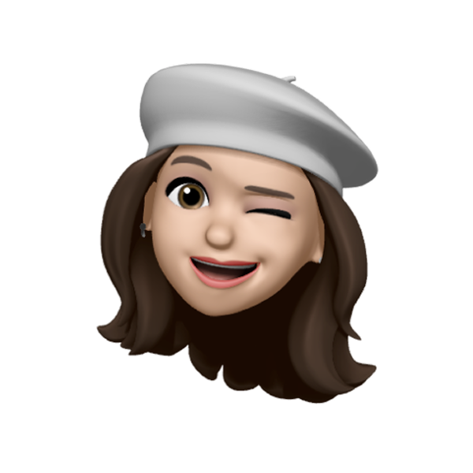
Продумывали логику

Проводили дизайн ревью
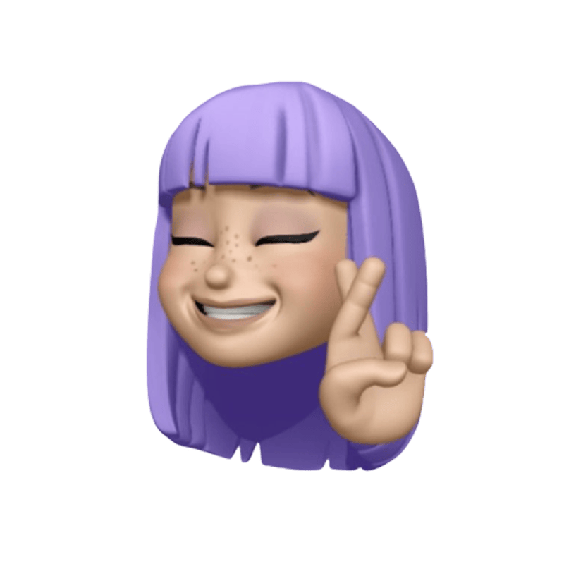
Обсуждали формулировки
Я отвечала за сценарий подключения и настройки подписки, обновление выбора фонда и доступа к отчётам, экран выбора оплаты и подход к success-экранам. Изучала конкурентов и существующие поверхности Авито, чтобы определить точки входа в разовые и регулярные пожертвования.
подключение и управление подпиской
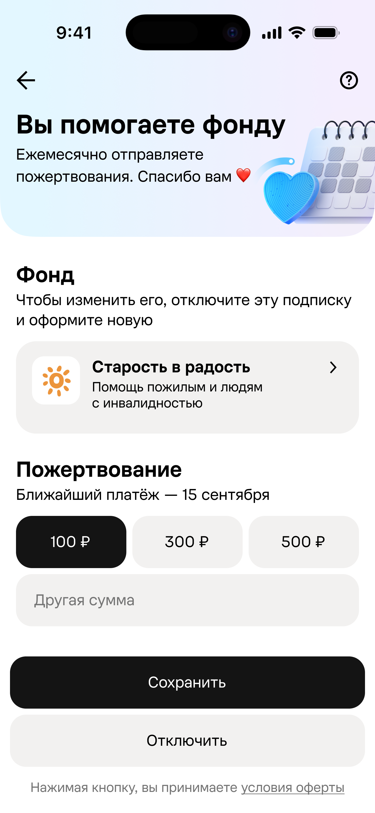
выбор фонда
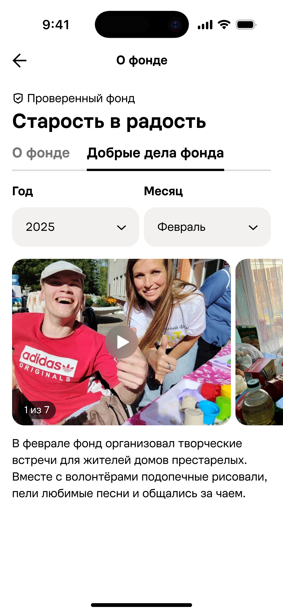
саксесс экраны общим подходом
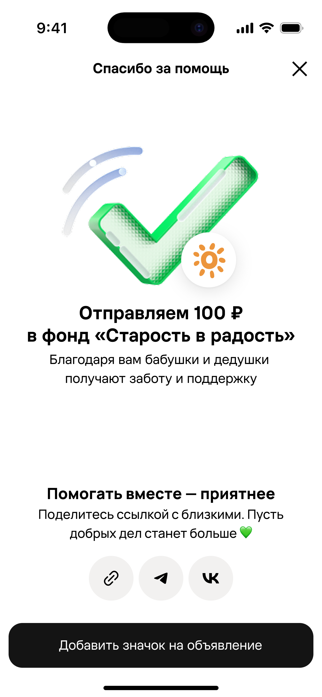
Выбрать фонд
Настроить помощь
Подключить подписку
Управлять подпиской
У проекта было несколько связанных задач.
Регулярная помощь требовала повторных действий. В разделе были только разовые пожертвования
Информации о фонде не хватало для решения о пожертвовании. В ранее проведённых исследованиях участники просили отчёты и конкретные результаты работы
Оплата и завершение сценария нуждались в согласованном представлении. Экран оплаты требовалось реализовать в рамках дизайн-системы, а success-экраны разных charity-проектов использовали разные решения
Выбор фонда и суммы были разнесены на два экрана, а возможности подключить регулярную помощь не было
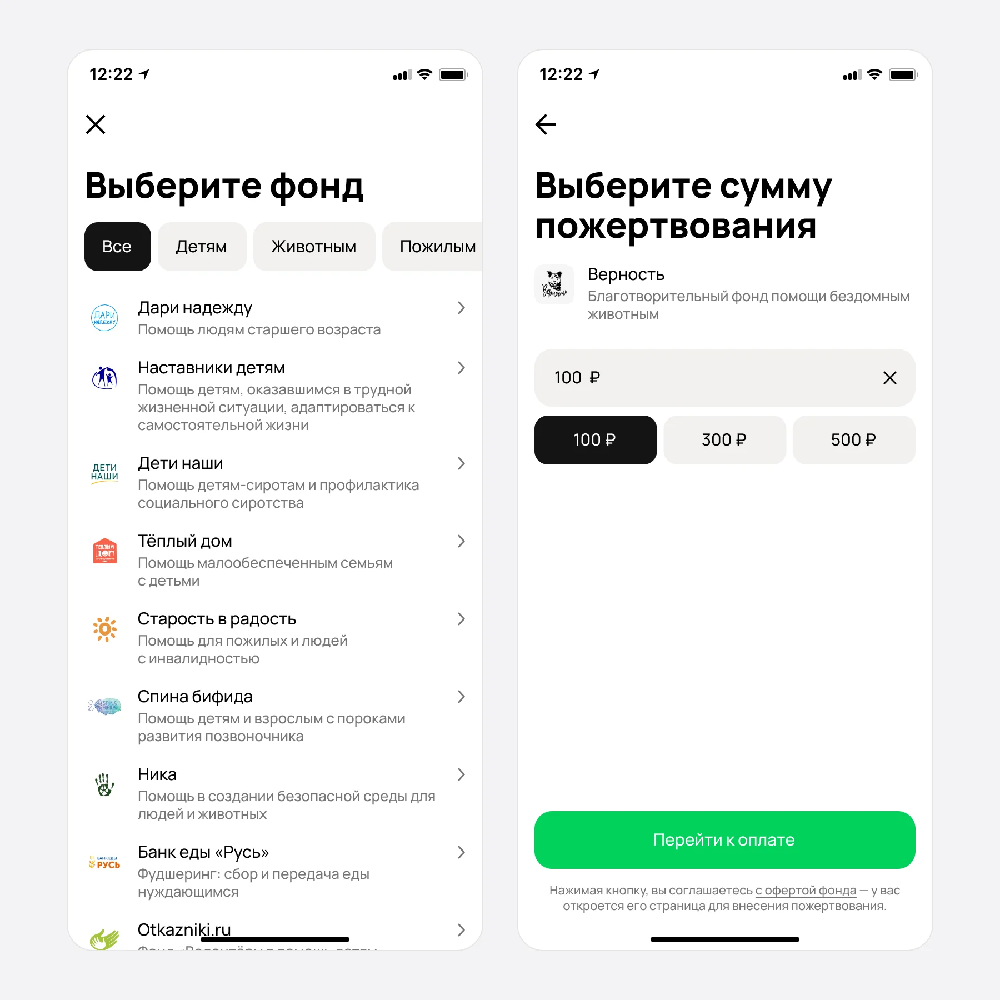
До
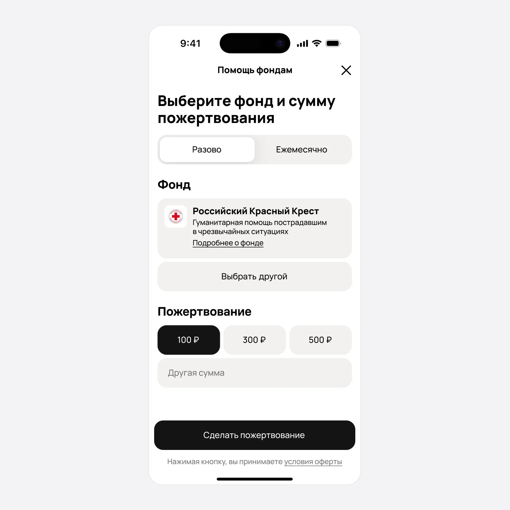
После
Каждое пожертвование требовало отдельных переходов, и для постоянной поддержки фонда приходилось заново проходить весь сценарий.
Искала везде, и на сайтах фондов, и в пинтересте, накидывала все флоу пожертвований, которые есть на просторах интернета, чтобы понять, какая вариативность отображения механики вообще есть.

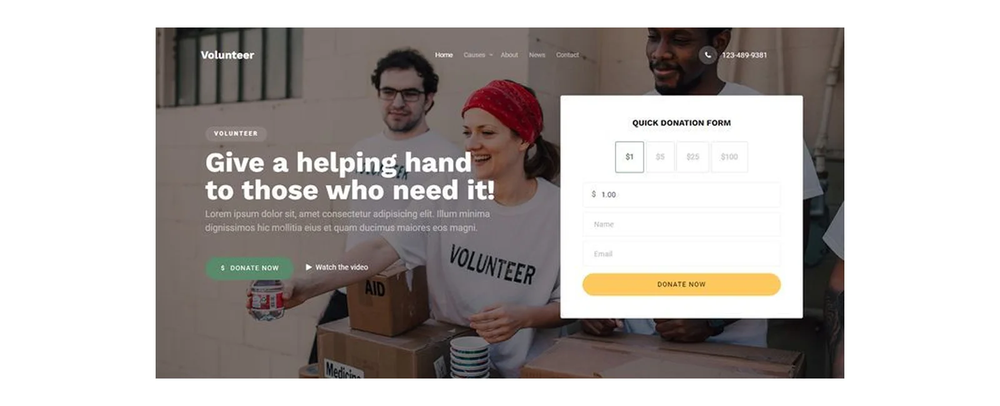
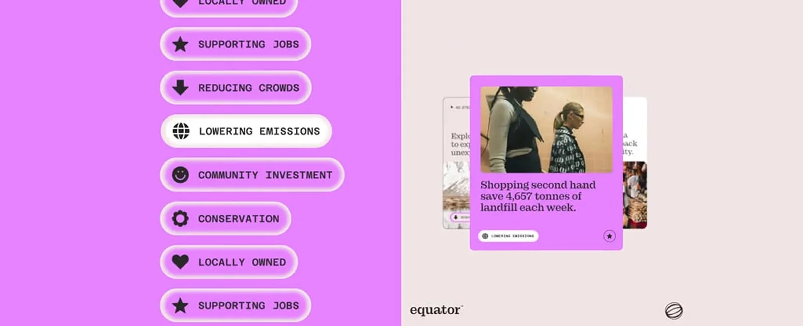
Прорабатывала разные визуальные идеи. Пыталась уходить во что-то более эмоциональное, побольше визуала добавляла. Но остановилась на более консервативном стиле, чтобы главная информация вмещалась в 1 скролл.
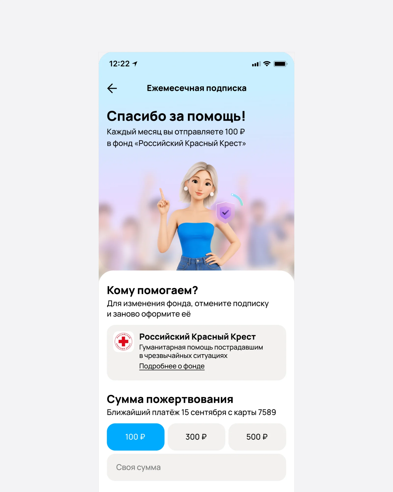
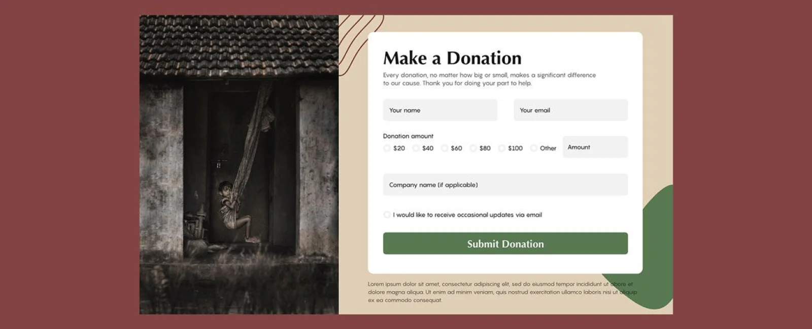
Я предусмотрела три точки входа в подписку
После подачи объявления

В выдаче объявлений

На чарити лендингах

После подачи предлагаем помощь, когда основная задача уже завершена; в выдаче знакомим с подпиской через компактный баннер, сохраняя фокус на поиске; на charity-лендинге раскрываем условия подробнее для тех, кто уже интересуется благотворительностью.
Я перенесла выбор фонда на первый экран: до выбора суммы можно узнать о подставленном фонде, а при смене фонда открыть подробности о другом двойным нажатием. При разовом пожертвовании подставляем фонды из случайных категорий, чтобы помощь получали и менее популярные направления, помимо детей и животных.
Решение добавить «Добрые дела фонда» опиралось на ранее проведённые В исследованиях участникам не хватало информации о работе фондов, чтобы решиться на пожертвование. Я разделила карточку на две вкладки: «О фонде» — знакомство с организацией и ссылка на сайт, «Добрые дела фонда» — результаты работы с текстом, фото и видео за выбранный период.
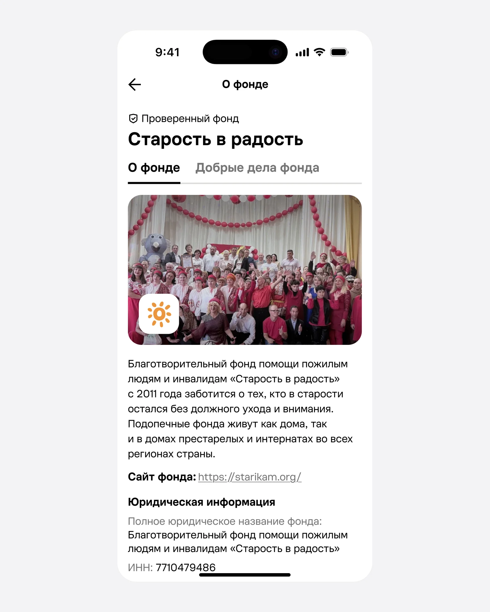
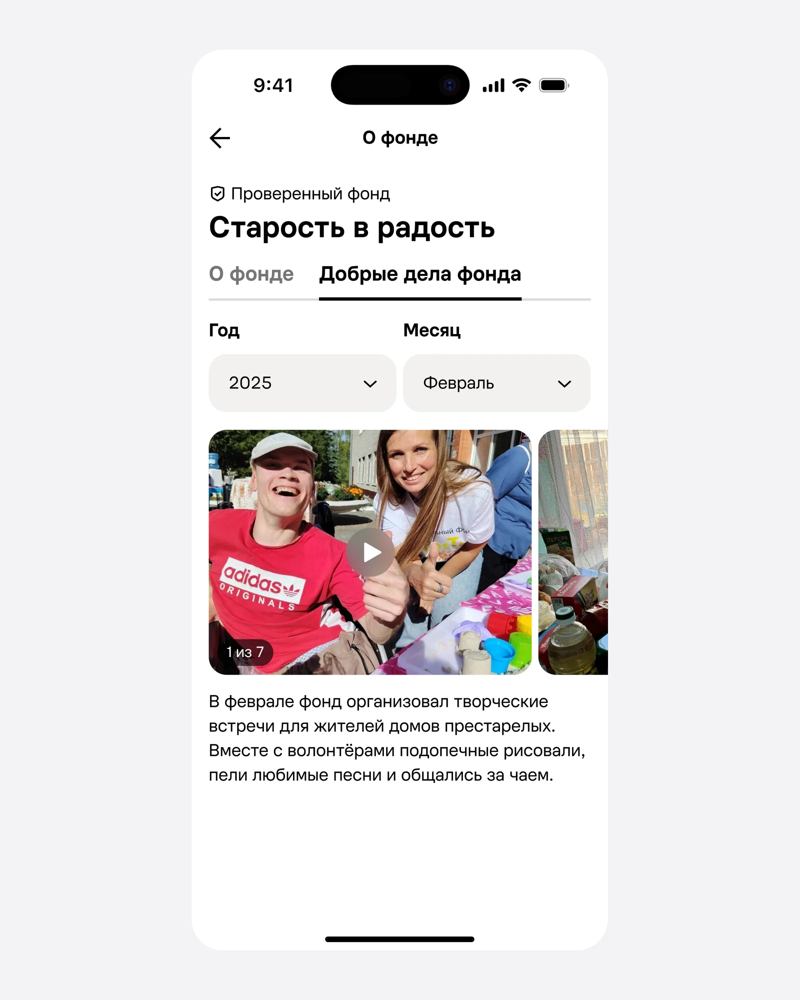
На экране подключения я собрала основные условия подписки: фонд, сумму и ежемесячность списаний. Человек может выбрать 100, 300 или 500 ₽ либо указать свою сумму. Пояснение о повторении платежа находится рядом с суммой, до кнопки подключения.
Дополнительные условия вынесены в «Как это работает»: отсутствие комиссии, перечисление денег фондам напрямую, ежемесячный «Знак добра», возможность изменения и отключения подписки. Это позволяет сохранить основной экран компактным и дать подробности тем, кому они нужны.
Управление подпиской доступно из профиля и со страниц «Знака добра» в charity. В профиле видны фонд, сумма и дата ближайшего платежа — сумму можно быстро изменить прямо в карточке.
В настройках можно указать другую сумму или отключить подписку. Чтобы сменить фонд, нужно отключить текущую подписку и оформить новую.
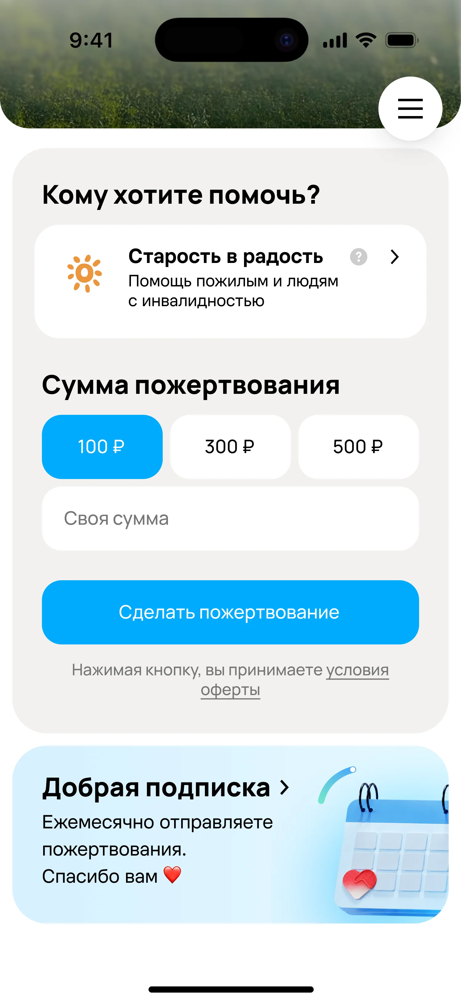
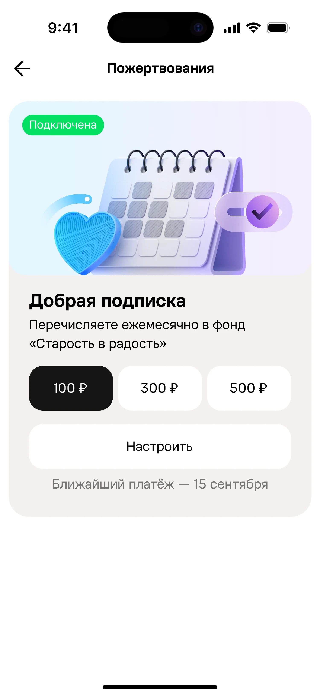
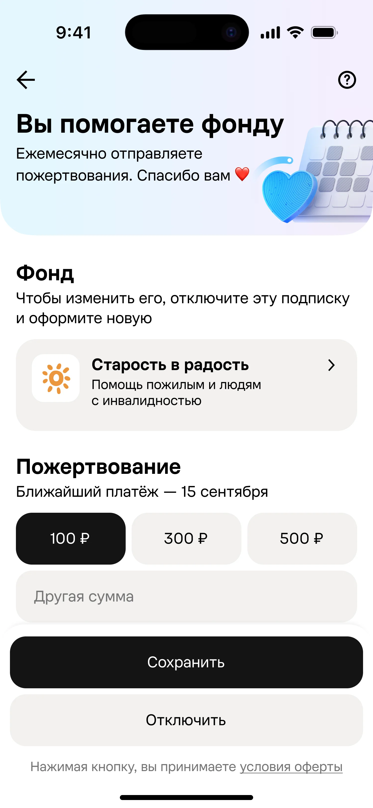
4 956 подписок у 4 341 пользователя
7 586 автоплатежей на 1,24 млн ₽
Средний платёж 164 ₽
Согласовала с командой оплаты единое представление способов оплаты в приложении и вебе. Добавила пояснения, какое приложение понадобится и где продолжится платёж.
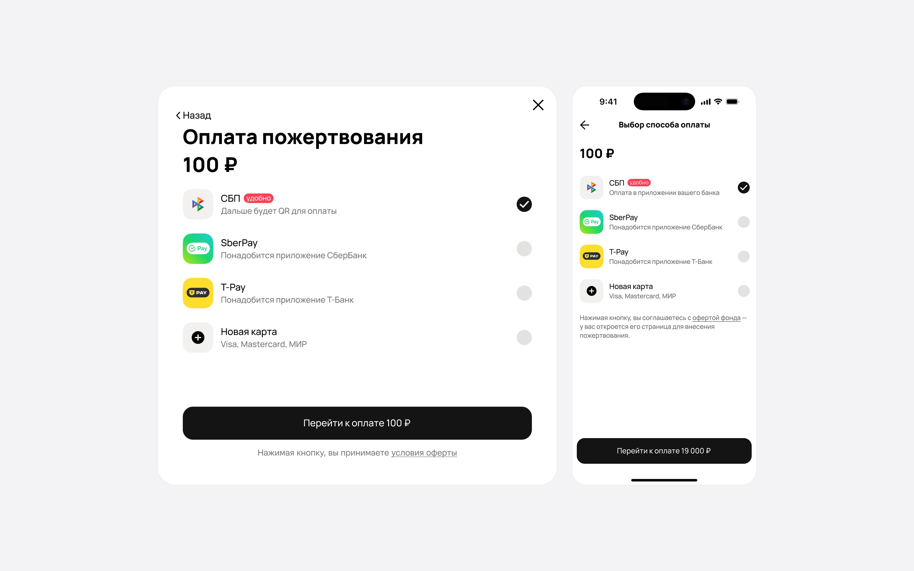
Оплата по-прежнему проходит через ЮKassa: переход во внешний интерфейс удлиняет путь, а статус ошибки может приходить с задержкой. Следующий шаг — переход на платёжный флоу Авито.
За квартал зафиксировано 14 840 успешных оплат, около 51% по данным проекта.
Экраны благодарности в charity-сценариях выглядели по-разному, а прежнюю анимацию заменили статичным изображением. Я разработала общий подход для полноэкранного формата, шторки и модального окна: понятное подтверждение действия, вклад пользователя и благодарность.
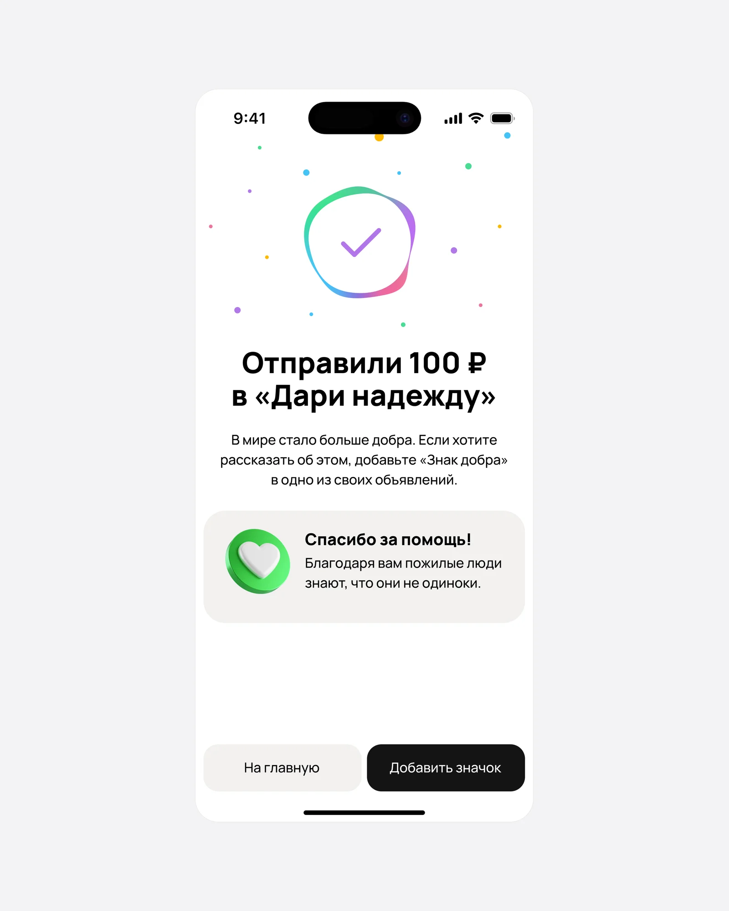
До
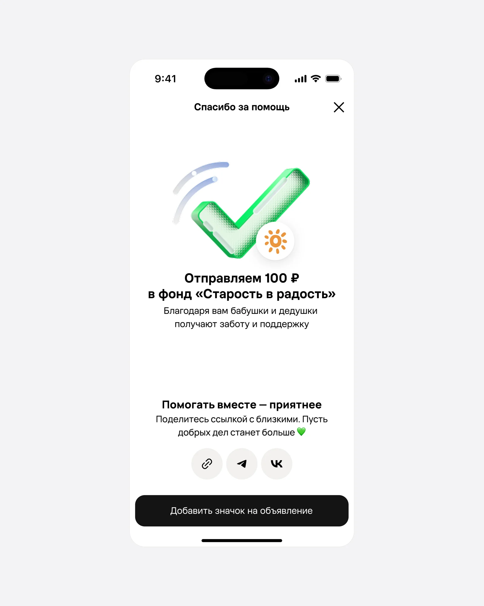
После
В подписке экран подтверждает подключение ежемесячной помощи и её условия. Добавила анимацию сердечек, чтобы сделать благодарность теплее; дополнительные действия — поделиться и добавить «Знак добра» на объявление.
Масштаб использования: около 2 000 показов экранов благодарности в день во всех charity-сценариях.
Запустили регулярную помощь с подключением и управлением подпиской, дополнили выбор фонда информацией о его работе. Дальше важно оценить повторные списания, отмены подписок и конверсию каждой точки входа в подключение.
4 956
Подписок
4 341
Уникальных пользователей
1,24 млн ₽
Автоплатежей
Данные за квартал